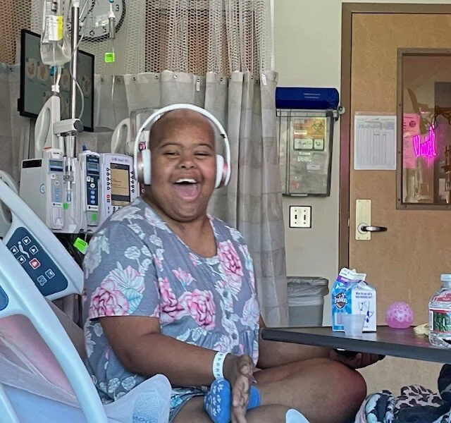
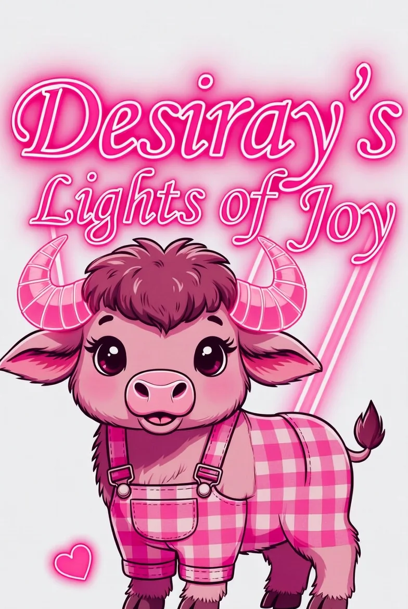

Meet Desiray Joy — Our Fierce, Radiant Warrior
Desiray Joy was a sweet, vibrant young adult with Down syndrome whose laughter could light up any room. When she faced Myelodysplastic Syndrome (MDS) blood cancer and a life-saving bone marrow transplant at Rady Children’s Hospital in San Diego, a gift of pink neon transformed darkness into endless hope.

- Sept 6, 2023
- Desiray’s Re-Birthdate (Day 0)
- Rady Children’s Hospital
- San Diego, California
- Aliyah
- 9/10 Bone Marrow Donor
- 501(c)(3) Charity
- Founded in Her Memory
-
October 2022
The Unforeseen Diagnosis: Myelodysplastic Syndrome
Desiray Joy was a happy young adult living with Down syndrome when an unexpected turn of events occurred. Following a trip to the emergency room for an unrelated matter, doctors conducted blood tests that led to a surprising emergency blood transfusion and a 4-night hospital stay.
Three months later, in October 2022, her family received the formal diagnosis: Myelodysplastic Syndrome (MDS), a rare and aggressive blood cancer. Over the next 10 months, Desiray made countless visits to the Hematology/Oncology clinic at Rady Children’s Hospital in San Diego, undergoing dozens of lab draws, blood transfusions, infusions, and bone marrow biopsies.
As her marrow function deteriorated, pediatric oncologists concluded that her only hope for survival was a full Bone Marrow Transplant (BMT). Desiray was immediately registered on the National Marrow Donor Program (NMDP) registry in search of a matching donor.
-
Summer 2023
Finding Aliyah: A 9/10 Miracle Donor Match
In the summer of 2023, the family received miraculous news: an anonymous, generous American female donor was identified on the registry as a 9/10 match for Desiray. She was motivated by pure compassion — stepping forward selflessly to help save a stranger’s life.
“We have had the honor and privilege to meet her through text and FaceTime, and are connected and connecting. Thank you, precious Aliyah, for helping to save Desiray’s life! We can hardly wait to get to meet you face-to-face.”
— Marlene & The Davis Family -
September 6, 2023
Day 0: The Re-Birthdate & The Long Hospital Stay
Desiray was admitted to the 4th-floor transplant isolation unit at Rady Children’s in late August 2023. On September 6th, 2023, she received Aliyah’s healthy bone marrow cells — an unforgettable day affectionately known in the transplant community as Day 0, and forever celebrated by her family as her Re-Birthdate.
Transplant recovery requires weeks of strict isolation, heavy conditioning, and intense side effects. Yet Desiray remained in the fight of her life, greeting nurses each morning with a wave and an unyielding spirit.
-
The Spark of Joy
Ms. Robin’s Gift: How Pink Neon Changed Everything
Desiray’s favorite color was bright pink. To brighten her sterile hospital room, her godmother, Ms. Robin, surprised Desiray with a fancy, personalized glowing neon wall sign displaying her name in radiant cursive pink.
The effect was immediate and breathtaking. The neon sign cast a warm, cheerful pink glow across the entire room, boldly standing out to doctors, nurses, and passersby day and night, especially after dark.
The positive feedback was overwhelming. Desiray and her family saw firsthand how a personalized glowing sign transformed an intimidating medical environment into a place of comfort, identity, and cheer. They made a solemn promise: to spread that love and let it shine for every pediatric BMT and stem cell patient at Rady Children’s Hospital.
-
September 2024 — Present
501(c)(3) Incorporation & Spreading the Light
Desiray passed away about a year after the nonprofit was founded, but her legacy continues to burn brightly. To celebrate her 1st Re-Birthday in September 2024, Desiray’s Lights of Joy (DLOJ) officially became a registered 501(c)(3) tax-exempt non-profit corporation.
What began with two dozen lights has now blossomed into over 58 personalized 30-inch neon signs donated to pediatric warriors, with 3 more currently in production. Each light is custom-crafted to each child’s name and color choice, delivered with a rechargeable battery so they can keep their light glowing as they walk the hospital halls.
Why the “Pink Buffalo Girl”?
In our family and across the local community, Desiray was affectionately nicknamed the “Pink Buffalo Girl”. At San Diego Comic-Con, she proudly rocked her full superhero outfit: bright pink satin cape with a buffalo motif, matching pink checkered overalls, and an aura of fearless confidence.
Buffalos represent strength, resilience, and walking straight into the storm rather than running away. Combined with Desiray’s gentle Down syndrome smile and love for bright pink, she embodied everything our foundation stands for:
- Strength Through Treatment: Standing tall through the hardest medical battles.
- Gentle Joy: Down syndrome advocacy, inclusion, and unconditional kindness.
- Unfading Light: Reminding sick children that their light can never be extinguished.

Who Receives Our Lights?
Every light we create is dedicated to a brave pediatric patient facing the most rigorous medical isolation and transplant regimens at Rady Children’s Hospital in San Diego.
Transplant Inpatients
Young patients admitted to the 4th-floor isolation ward for bone marrow and stem cell transplants to treat leukemia, aplastic anemia, sickle cell disease, and MDS.
Personalized Identity
Every sign is custom-designed around what makes the child unique: their name, nickname, favorite color, and uplifting symbol (hearts, dinosaurs, gaming shields, or butterflies).
Lifelong Keepsake
When treatment concludes and the warrior rings the hospital victory bell, their neon light journeys home to hang in their bedroom as a permanent badge of courage.
Illuminating Rooms for Young Warriors
Every personalized 30-inch neon light brings comfort and hope to pediatric oncology and transplant patients at Rady Children’s Hospital in San Diego, reminding each child that they are loved and never fighting alone.